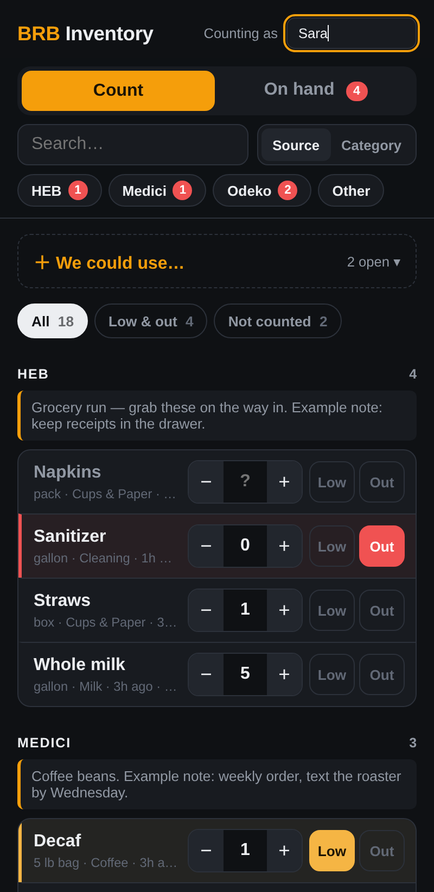
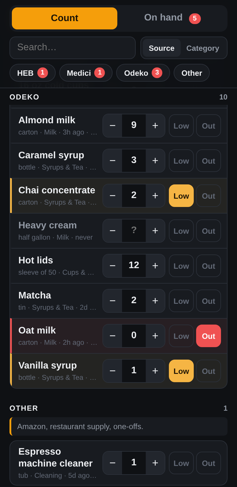
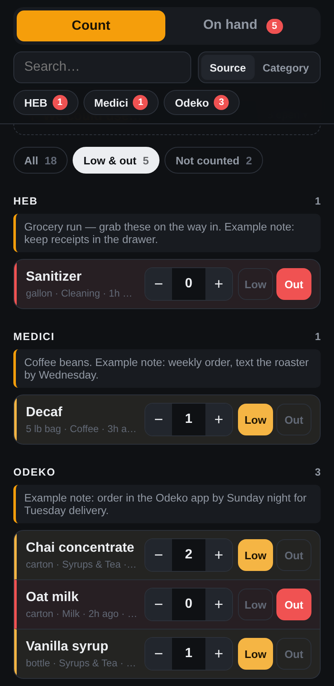
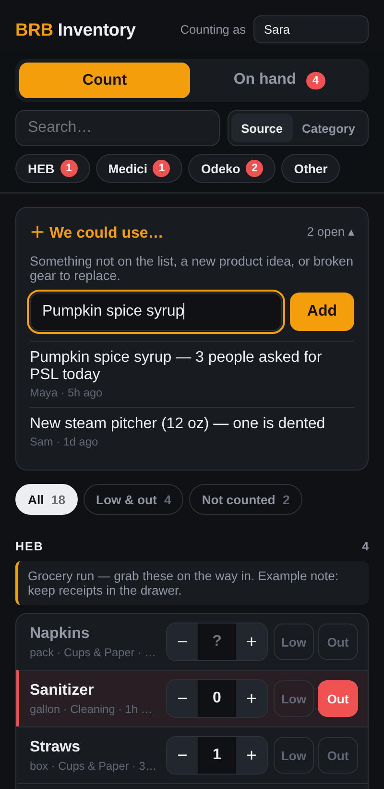
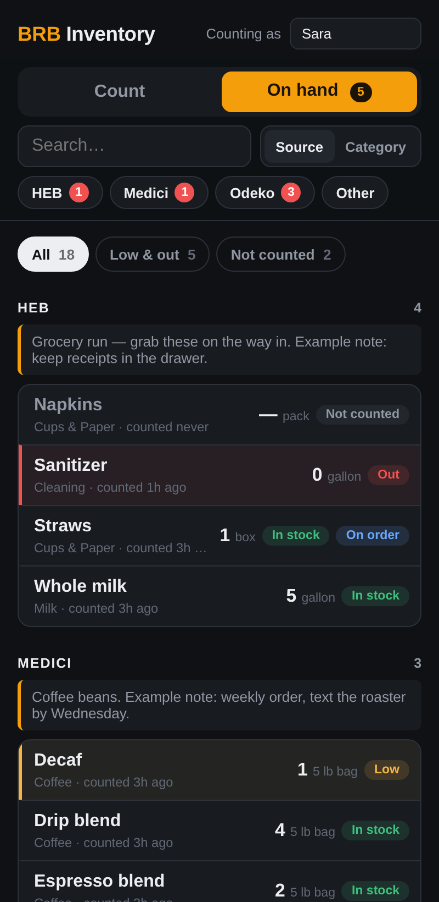

Recipes, the inventory app, scheduling, and cleaning standards. Keep a printed copy behind the bar.
Use the quick reference on shift. Full builds and method notes follow.
| Drink | Build |
|---|---|
| Pour over | 17 g in / ~400 g out |
| Batch brew | 160 g in / ½ gallon out |
| Drink | Build |
|---|---|
| Iced latte | 1 shot + 8 oz cold milk over ice |
| Cold brew | 450 g beans + 16 qt water |
| Iced matcha | 5 g matcha + 50 g hot water + 9 oz milk over ice |
| Drink | Build |
|---|---|
| Espresso | 18 g in / ~36 g out (28–32 s) |
| Americano, hot | 1 shot + 8–12 oz hot water |
| Americano, iced | Quad shot + 10 oz water over ice |
| Macchiato | 1 shot + ~3 oz foam |
| Cortado | 1 shot + 4 oz silky steamed milk |
| Cappuccino | 1 shot + 5 oz foam (cacao optional) |
| Latte | 1 shot + 8–10 oz steamed milk |
| Mocha | 1 shot + 1 oz chocolate + 8 oz milk |
| Drink | Build |
|---|---|
| Desert / Midnight Rose | 2 pumps rose + 1.5 oz tahini + 6 oz milk (frothed) · espresso on the side · black seed |
| Espresso tonic | Ice + 1 pump vanilla + ½ oz lemon + sparkling water · espresso on top |
| Pistachio mocha | Espresso + 1 oz chocolate · 9 oz milk + 2 pumps pistachio + 1 oz pistachio butter (frothed) |
Same build as pistachio, cardamom syrup.
Same build as pistachio, rose syrup.
Whisk 5 g matcha with 50 g water (10 g water per gram). Add 8 oz steamed milk.
1:1 chai concentrate to milk. Hot: steam together. Iced: pour over ice, cinnamon garnish.
Same method as chai, golden milk base.
1 oz chocolate + 8 oz steamed milk.
Steep pouch 5 min hot → dilute → chill.
2 oz concentrate + 12 oz filtered water. Optional ½ oz lemon juice to adjust acidity.
Open inventory.brbcoffee-atx.com on the shop tablet or your phone. No login. Every count and flag you make goes straight to the manager's order list, so keep it honest and current.
Tap the Counting as box at the top right and type your name. The device remembers it, so you only do this once per phone or tablet.
Your name shows next to every count, so the manager knows who to ask about it.

On the Count tab, items are grouped by where we buy them (HEB, Odeko, Medici, Other). Read the note under each group. It tells you things like order cutoffs.
The pills under the search bar (HEB, Medici…) jump straight to that group. The red number is how many items there need attention.

Tap the same button again to clear the flag once the stock is back.
Tap the Low & out filter to see only flagged items. Use it at the end of your shift to double-check the list before handing off.

Need something that isn't on the list, have a product idea, or found broken gear? Tap ＋ We could use…, type it, and tap Add.
Check the open requests first so you don't add the same thing twice.

The On hand tab is read-only. It shows the latest count, when it was counted, and a status:
Search and Source / Category switch work the same on both tabs.

Screenshots use sample items. The real list in the app may differ.
The new scheduling app is being built. This section will cover how to view your shifts, request time off, and swap shifts. Until then, follow the schedule your manager posts.
A clean bar is part of every drink we serve. These are the standards every barista is held to, on every shift.
Cleaning is split by shift so nothing falls through the cracks. The day / shared shift keeps the bar clean during service and does a mid-day reset before handing off. The closing shift does the full equipment clean and sets up the shop to open clean the next day.
Customers judge the whole shop by the bathroom. Check it every 2 hours while we're open, and clean it fully at close.
Printable checklists follow: day shift, closing shift, bathroom, and a weekly sign-off log.
| Time | Initials | Time | Initials |
|---|---|---|---|
Before you clock out, go down your shift's list and put your initials under today for each task you finished. Your initials mean it's done to standard. Leave a box empty if it isn't, and tell your manager why.
| Task | Mon | Tue | Wed | Thu | Fri | Sat | Sun |
|---|---|---|---|---|---|---|---|
| Day / shared shift · before you leave | |||||||
| Both fridges wiped | |||||||
| Matcha, syrup & sauce mats washed | |||||||
| Syrup pumps & sauce bottles wiped | |||||||
| Baklava display wiped | |||||||
| Bathroom checked & restocked | |||||||
| Low / out marked in the app | |||||||
| Closing team told what’s left | |||||||
| Closing shift | |||||||
| Chocolate, pistachio butter & syrups refilled | |||||||
| Group heads backflushed | |||||||
| Steam wands purged & wiped | |||||||
| Portafilters & baskets cleaned | |||||||
| Drip tray & knock box cleaned | |||||||
| Grinder emptied & purged | |||||||
| Counters & high-touch surfaces wiped | |||||||
| Full bathroom clean | |||||||
| Floors swept & mopped | |||||||
| All trash out | |||||||
| Low / out marked in the app | |||||||
| Manager check | |||||||